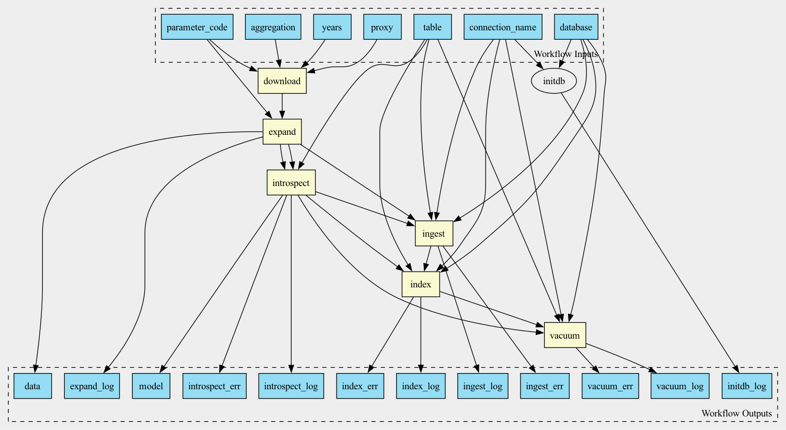

Full EPA AQS Processing Pipeline

Workflow
Description
This workflow downloads AQS data from the government servers, introspects it to infer the database schema and ingests the data into the database
Example run:
cwl-runner aqs.cwl sample_aqs_annual.yml
Or
cwl-runner /opt/airflow/project/epa/src/cwl/aqs.cwl --database /opt/airflow/project/database.ini --connection_name nsaph2 --agregation annual --parameter_code PM25 --table pm25_annual --proxy $HTTP_PROXY
Inputs
Name |
Type |
Default |
Description |
|---|---|---|---|
proxy |
string? |
HTTP/HTTPS Proxy if required |
|
database |
File |
Path to database connection file, usually database.ini |
|
connection_name |
string |
The name of the section in the database.ini file |
|
aggregation |
string |
||
parameter_code |
string |
Parameter code. Either a numeric code (e.g. 88101, 44201) or symbolic name (e.g. PM25, NO2). See more: AQS Code List |
|
table |
string |
Name of the table to be created in the database |
|
years |
string[] |
Years to download |
Outputs
Name |
Type |
Description |
|---|---|---|
initdb_log |
File |
|
expand_log |
File |
|
introspect_log |
File |
|
ingest_log |
File |
|
index_log |
File |
|
vacuum_log |
File |
|
data |
File |
|
model |
File |
|
introspect_err |
File |
|
ingest_err |
File |
|
index_err |
File |
|
vacuum_err |
File |